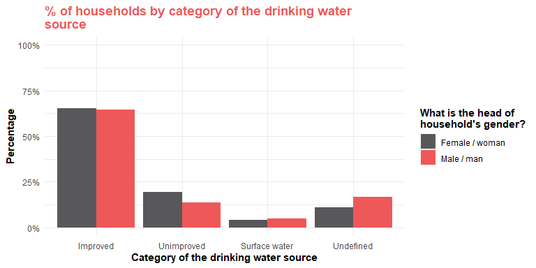

The goal of presentresults is to create outputs from a results table (long format with analysis key).
The analysis key is the unique identifier of the analysis. The format is the following:
analysis type @/@ analysis variable %/% analysis variable value @/@ grouping variable %/% grouping variable value
analysis type @/@ dependent variable %/% dependent variable value @/@ independent variable %/% independent variable value
If there are two or more grouping variables it would look like that
- analysis type @/@ analysis variable %/% analysis variable value @/@ grouping variable 1 %/% grouping variable value 1 -/- grouping variable 2 %/% grouping variable value 2
There are 3 types of separators:
@/@ will separate the top level information: analysis type, the analysis (dependent) variable information and the grouping (independent) variable
%/% will separate the analysis and grouping information: it will separate the variable name and the variable value
-/- will separate 2 variables in case there are multiple variable in either the analysis or grouping sets.
The current analysis types available are :
- mean
- median
- prop_select_one: proportion for select one
- prop_select_multiple: proportion for select multiple
- ratio
Installation
You can install the development version of presentresults from GitHub with:
# install.packages("devtools")
devtools::install_github("impact-initiatives/presentresults")Large table variables (lines) per groups (columns)
This is how to turn a results table into a wide table variable per group.
example_variable_x_group <- presentresults_resultstable %>%
create_table_variable_x_group(analysis_key = "analysis_key")
example_variable_x_group[1:6, 1:9]
#> # A tibble: 6 × 9
#> analysis_type analysis_var analysis_var_value `stat_locationA %/% displaced`
#> <chr> <chr> <chr> <dbl>
#> 1 prop_select_one fcs_cat low 0.258
#> 2 prop_select_one fcs_cat medium 0.323
#> 3 prop_select_one fcs_cat high 0.419
#> 4 prop_select_one rcsi_cat low 0.290
#> 5 prop_select_one rcsi_cat medium 0.258
#> 6 prop_select_one rcsi_cat high 0.452
#> # ℹ 5 more variables: `stat_low_locationA %/% displaced` <dbl>,
#> # `stat_upp_locationA %/% displaced` <dbl>,
#> # `stat_locationA %/% non-displaced` <dbl>,
#> # `stat_low_locationA %/% non-displaced` <dbl>,
#> # `stat_upp_locationA %/% non-displaced` <dbl>
example_variable_x_group %>%
create_xlsx_variable_x_group(file_path = "mytable.xlsx")The table without the higher and lower confidence bound.
example_variable_x_group <- presentresults_resultstable %>%
create_table_variable_x_group(value_columns = "stat")
example_variable_x_group[1:6, 1:9]
#> # A tibble: 6 × 9
#> analysis_type analysis_var analysis_var_value `locationA %/% displaced`
#> <chr> <chr> <chr> <dbl>
#> 1 prop_select_one fcs_cat low 0.258
#> 2 prop_select_one fcs_cat medium 0.323
#> 3 prop_select_one fcs_cat high 0.419
#> 4 prop_select_one rcsi_cat low 0.290
#> 5 prop_select_one rcsi_cat medium 0.258
#> 6 prop_select_one rcsi_cat high 0.452
#> # ℹ 5 more variables: `locationA %/% non-displaced` <dbl>,
#> # `locationB %/% displaced` <dbl>, `locationB %/% non-displaced` <dbl>,
#> # locationA <dbl>, locationB <dbl>
presentresults_resultstable %>%
create_table_variable_x_group() %>%
create_xlsx_variable_x_group(
file_path = "mytable.xlsx",
value_columns = "stat"
)Large table groups (lines) per variables (columns)
This is how to turn a results table into a wide group per variable. This format is made to be read in Excel.
example_group_x_variable <- create_table_group_x_variable(presentresults_resultstable, value_columns = "stat")
example_group_x_variable[1:6, 1:10]
#> group_var_value
#> header_analysis_var group_var_value
#> header_analysis_var_value group_var_value
#> header_analysis_type group_var_value
#> 1 locationA %/% displaced
#> 2 locationA %/% non-displaced
#> 3 locationB %/% displaced
#> fcs_cat %/% low %/% prop_select_one
#> header_analysis_var fcs_cat
#> header_analysis_var_value low
#> header_analysis_type prop_select_one
#> 1 0.258064516129032
#> 2 0.25
#> 3 0.37037037037037
#> fcs_cat %/% medium %/% prop_select_one
#> header_analysis_var fcs_cat
#> header_analysis_var_value medium
#> header_analysis_type prop_select_one
#> 1 0.32258064516129
#> 2 0.375
#> 3 0.407407407407407
#> fcs_cat %/% high %/% prop_select_one
#> header_analysis_var fcs_cat
#> header_analysis_var_value high
#> header_analysis_type prop_select_one
#> 1 0.419354838709677
#> 2 0.375
#> 3 0.222222222222222
#> rcsi_cat %/% low %/% prop_select_one
#> header_analysis_var rcsi_cat
#> header_analysis_var_value low
#> header_analysis_type prop_select_one
#> 1 0.290322580645161
#> 2 0.375
#> 3 0.259259259259259
#> rcsi_cat %/% medium %/% prop_select_one
#> header_analysis_var rcsi_cat
#> header_analysis_var_value medium
#> header_analysis_type prop_select_one
#> 1 0.258064516129032
#> 2 0.458333333333333
#> 3 0.518518518518518
#> rcsi_cat %/% high %/% prop_select_one
#> header_analysis_var rcsi_cat
#> header_analysis_var_value high
#> header_analysis_type prop_select_one
#> 1 0.451612903225806
#> 2 0.166666666666667
#> 3 0.222222222222222
#> lcs_cat %/% none %/% prop_select_one
#> header_analysis_var lcs_cat
#> header_analysis_var_value none
#> header_analysis_type prop_select_one
#> 1 0.193548387096774
#> 2 0.0416666666666667
#> 3 0.296296296296296
#> lcs_cat %/% stress %/% prop_select_one
#> header_analysis_var lcs_cat
#> header_analysis_var_value stress
#> header_analysis_type prop_select_one
#> 1 0.129032258064516
#> 2 0.458333333333333
#> 3 0.259259259259259
#> lcs_cat %/% emergency %/% prop_select_one
#> header_analysis_var lcs_cat
#> header_analysis_var_value emergency
#> header_analysis_type prop_select_one
#> 1 0.32258064516129
#> 2 0.291666666666667
#> 3 0.185185185185185Export a table group per variable in Excel
presentresults_resultstable %>%
create_table_group_x_variable() %>%
create_xlsx_group_x_variable(file_path = "mytable.xlsx")Adding labels to results table
You can add labels to the results table. See the vignette for more information.
label_results <- add_label_columns_to_results_table(
results_table = presentresults_MSNA2024_results_table,
dictionary = presentresults_MSNA2024_dictionary
)
#> Joining with `by = join_by(analysis_type)`
#> Joining with `by = join_by(analysis_key)`Work in progress, but the idea will be to export it after.
label_results <- label_results %>%
dplyr::filter(group_var != "hoh_gender")
example_variable_x_group <- label_results %>%
create_table_group_x_variable(analysis_key = "label_analysis_key", value_columns = "stat")Example for the IPC table
no_nas_presentresults_resultstable <- presentresults_resultstable %>%
dplyr::filter(!(analysis_type == "prop_select_one" & is.na(analysis_var_value)))
example_ipc <- create_ipc_table(
results_table = no_nas_presentresults_resultstable,
dataset = presentresults_MSNA_template_data,
cluster_name = "cluster_id",
fcs_cat_var = "fcs_cat",
fcs_cat_values = c("low", "medium", "high"),
fcs_set = c(
"fs_fcs_cereals_grains_roots_tubers",
"fs_fcs_beans_nuts",
"fs_fcs_dairy",
"fs_fcs_meat_fish_eggs",
"fs_fcs_vegetables_leaves",
"fs_fcs_fruit",
"fs_fcs_oil_fat_butter",
"fs_fcs_sugar",
"fs_fcs_condiment"
),
hhs_cat_var = "hhs_cat",
hhs_cat_values = c("none", "slight", "moderate", "severe", "very_severe"),
hhs_cat_yesno_set = c("fs_hhs_nofood_yn", "fs_hhs_sleephungry_yn", "fs_hhs_daynoteating_yn"),
hhs_cat_freq_set = c("fs_hhs_nofood_freq", "fs_hhs_sleephungry_freq", "fs_hhs_daynoteating_freq"),
hhs_value_freq_set = c("rarely_1_2", "sometimes_3_10", "often_10_times"),
rcsi_cat_var = "rcsi_cat",
rcsi_cat_values = c("low", "medium", "high"),
rcsi_set = c("rCSILessQlty", "rCSIBorrow", "rCSIMealSize", "rCSIMealAdult", "rCSIMealNb"),
lcsi_cat_var = "lcs_cat",
lcsi_cat_values = c("none", "stress", "emergency", "crisis"),
lcsi_set = c(
"liv_stress_lcsi_1",
"liv_stress_lcsi_2",
"liv_stress_lcsi_3",
"liv_stress_lcsi_4",
"liv_crisis_lcsi_1",
"liv_crisis_lcsi_2",
"liv_crisis_lcsi_3",
"liv_emerg_lcsi_1",
"liv_emerg_lcsi_2",
"liv_emerg_lcsi_3"
),
with_hdds = FALSE
)
#> Joining with `by = join_by(analysis_key)`
#> Joining with `by = join_by(group_var_value)`
example_ipc[["ipc_table"]][1:6, 1:10]
#> group_var_value number_of_cluster
#> header_analysis_var group_var_value number_of_cluster
#> header_analysis_var_value group_var_value <NA>
#> header_analysis_type group_var_value <NA>
#> 1 locationA %/% displaced 2
#> 2 locationA %/% non-displaced 2
#> 3 locationB %/% displaced 2
#> number_of_hh fcs_cat %/% low %/% prop_select_one
#> header_analysis_var number_of_hh fcs_cat
#> header_analysis_var_value <NA> low
#> header_analysis_type <NA> prop_select_one
#> 1 31 0.258064516129032
#> 2 24 0.25
#> 3 27 0.37037037037037
#> fcs_cat %/% medium %/% prop_select_one
#> header_analysis_var fcs_cat
#> header_analysis_var_value medium
#> header_analysis_type prop_select_one
#> 1 0.32258064516129
#> 2 0.375
#> 3 0.407407407407407
#> fcs_cat %/% high %/% prop_select_one
#> header_analysis_var fcs_cat
#> header_analysis_var_value high
#> header_analysis_type prop_select_one
#> 1 0.419354838709677
#> 2 0.375
#> 3 0.222222222222222
#> hhs_cat %/% none %/% prop_select_one
#> header_analysis_var hhs_cat
#> header_analysis_var_value none
#> header_analysis_type prop_select_one
#> 1 0.225806451612903
#> 2 0.208333333333333
#> 3 0.222222222222222
#> hhs_cat %/% slight %/% prop_select_one
#> header_analysis_var hhs_cat
#> header_analysis_var_value slight
#> header_analysis_type prop_select_one
#> 1 0.258064516129032
#> 2 0.291666666666667
#> 3 0.222222222222222
#> hhs_cat %/% moderate %/% prop_select_one
#> header_analysis_var hhs_cat
#> header_analysis_var_value moderate
#> header_analysis_type prop_select_one
#> 1 0.225806451612903
#> 2 0.0833333333333333
#> 3 0.222222222222222
#> hhs_cat %/% severe %/% prop_select_one
#> header_analysis_var hhs_cat
#> header_analysis_var_value severe
#> header_analysis_type prop_select_one
#> 1 0.0967741935483871
#> 2 0.25
#> 3 0.222222222222222
example_ipc %>%
create_xlsx_group_x_variable(example_ipc, table_name = "ipc_table", file_path = "ipc_table.xlsx")ggplot2 theme
There are some theme and palettes available to customise the graphs.
data_to_plot <- presentresults::presentresults_MSNA2024_labelled_results_table |>
dplyr::filter(
analysis_var == "wash_drinking_water_source_cat",
group_var == "hoh_gender",
group_var_value %in% c("male", "female")
) |>
dplyr::mutate(label_analysis_var_value = factor(label_analysis_var_value,
levels = c("Improved",
"Unimproved",
"Surface water",
"Undefined")))
initialplot <- data_to_plot %>%
ggplot2::ggplot() +
ggplot2::geom_col(
ggplot2::aes(
x = label_analysis_var_value,
y = stat,
fill = label_group_var_value
),
position = "dodge"
) +
ggplot2::labs(
title = stringr::str_wrap(unique(data_to_plot$indicator), 50),
x = stringr::str_wrap(unique(data_to_plot$label_analysis_var), 50),
fill = stringr::str_wrap(unique(data_to_plot$label_group_var), 20)
)
initialplot +
theme_barplot() +
theme_impact("reach")
Code of Conduct
Please note that the presentresults project is released with a Contributor Code of Conduct. By contributing to this project, you agree to abide by its terms.